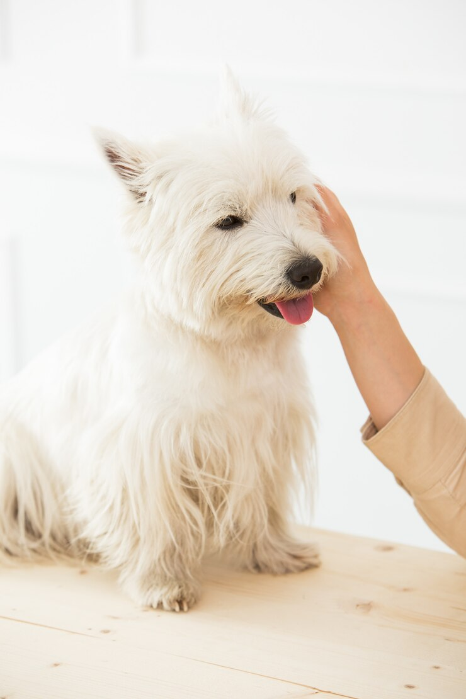

Deep-Dive into De-Shedding
Published on

De-shedding can be uncomfortable for you and your dog! Redness, itchy and dry skin, matting, and overheating are just some of the risks your pet may endure if they are shedding a lot. Be sure to contact your veternarian if you notice your pet is in pain.
Why Is De-Shedding Important?
Excess shedding isn’t just about mess. It can lead to matting, skin redness, and irritation. Over time, if not addressed, it can cause more serious issues, like dry skin and overheating. Proper de-shedding helps your dog’s coat stay smooth and healthy, and it keeps your home a little cleaner too!Signs Your Dog Needs De-Shedding:
If you notice your dog scratching more than usual, their fur feels rough, or you see mats developing, these are signs that your dog may need some help with de-shedding. Long-haired breeds are particularly prone to mats, which can trap dirt and moisture, leading to skin problems.The Right Tools for the Job:
Using the right tools is key to effective de-shedding. A de-shedding brush or comb designed for your dog's coat type can help remove loose fur without causing discomfort. Regular brushing can help prevent mats and reduce shedding, while also allowing you to check for any skin issues early on.De-Shedding Sessions at Gibby’s:
If de-shedding seems like too much to handle at home, don’t worry! Our professional groomers at Gibby's Grooming are trained to safely and effectively manage the de-shedding process. We use high-quality tools and products to make sure your pet's coat is left smooth and free of tangles—without causing any discomfort!Stay Vigilant and Visit the Vet:
Excessive shedding can sometimes be a sign of underlying health issues. If your pet seems to be shedding abnormally or showing signs of discomfort like itching, redness, or dry patches, it's a good idea to schedule a visit with your veterinarian to rule out any medical concerns.
While shedding is a natural part of your pet's life, keeping it under control is essential for their comfort and health. Regular grooming, proper tools, and professional help can make a huge difference in how your pet feels—and how much fur you find around your house!
